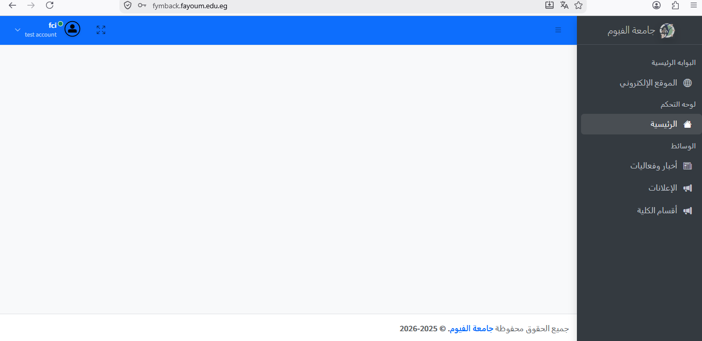
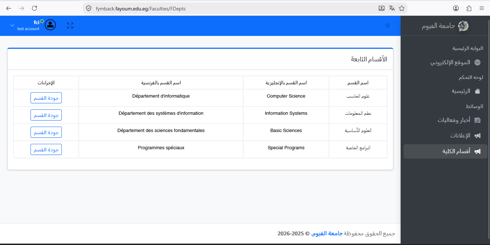
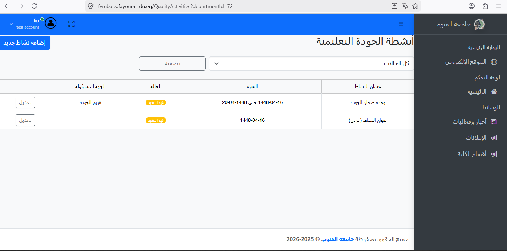
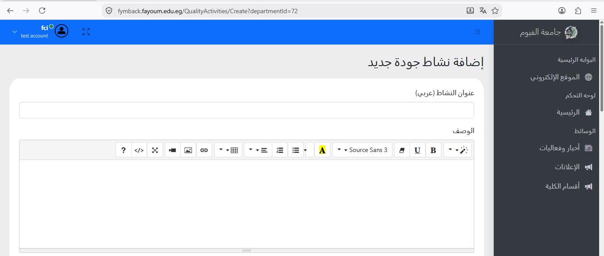
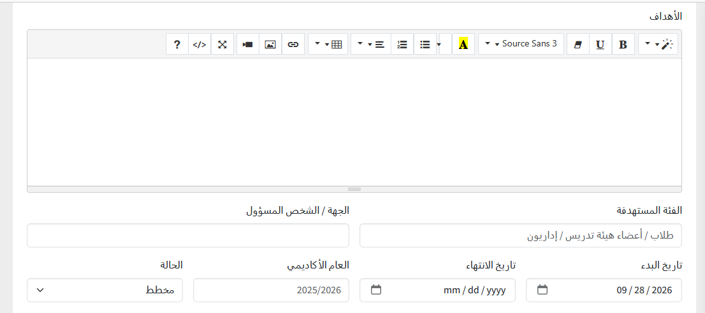
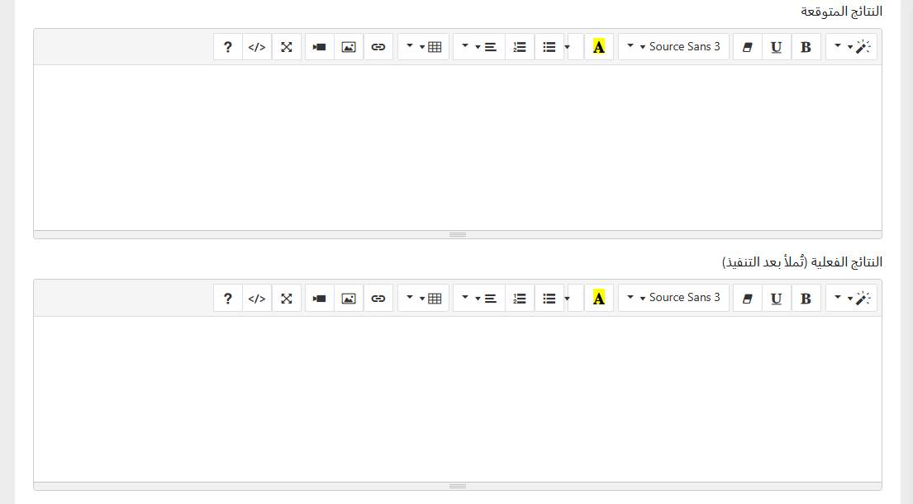
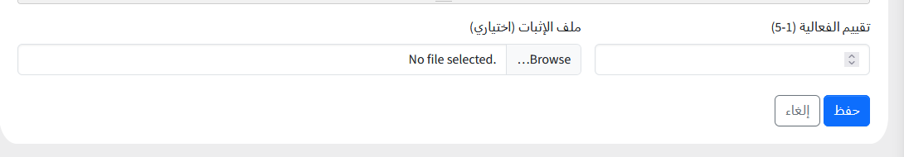

لوحة التحكم - إدارة وإدخال وتعديل أنشطة الجودة
الخطوة 5: لوحة التحكم الرئيسية وأقسام الكلية
بعد تسجيل الدخول بنجاح، تظهر واجهة لوحة التحكم الرئيسية ومن خلال القائمة الجانبية يتم الانتقال إلى خيار "أقسام الكلية".

الخطوة 6: صفحة أقسام الكلية
تظهر قائمة الأقسام التابعة، وللدخول إلى تفاصيل الجودة الخاصة بقسم نظم المعلومات يتم الضغط على زر "جودة القسم" المقابل له.

الخطوة 7: جدول أنشطة الجودة والإضافة والتعديل
من جدول الأنشطة الخاصة بالقسم، يمكنك الضغط على زر "إضافة نشاط جديد" أو الضغط على زر "تعديل" بجانب أي نشاط لتعديل بياناته.

الخطوة 8: إضافة نشاط جودة جديد (العنوان والوصف)
يتم إدخال عنوان النشاط (عربي) وكتابة تفاصيل الوصف الخاصة بالنشاط.

الخطوة 9: إدخال الأهداف، الحالة، والمواعيد
يتم كتابة الأهداف الخاصة بالنشاط، وتحديد الفئة المستهدفة، الجهة أو الشخص المسؤول، العام الأكاديمي، وتاريخ البدء والانتهاء، بالإضافة إلى تحديد الحالة (إما مخطط أو جاري التنفيذ أو منتهي) حسب طبيعة النشاط.

الخطوة 10: النتائج وتقييم الفعالية
تتم تعبئة النتائج المتوقعة والنتائج الفعلية (تملأ بعد التنفيذ)، وتحديد تقييم الفعالية.

الخطوة 11: رفع ملف الإثبات وحفظ النشاط
في هذه الخطوة، يتم رفع ملف الإثبات (اختياري) من خلال زر التصفح (Browse)، ثم الضغط على زر حفظ لإتمام العملية بنجاح.

الخطوة 12: نتيجة الحفظ وعرض النشاط في الجدول
بعد الانتهاء من الحفظ بنجاح، يتم العودة تلقائياً إلى جدول الأنشطة لتجد أن النشاط الجديد قد تم إضافته وظهر بنجاح ضمن قائمة الأنشطة.